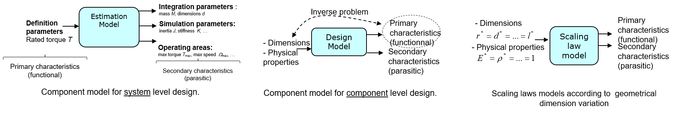

3.3. Scaling laws#
For a preliminary design, obtaining component’s characteristics can be nessary for simulation or the comparison of different possible solutions. This informations can be obtained:
In catalogues if the component can be chosen from an industrial range and if the catalogues gives the desire characteristic.
By computing them using complex design models.
By asking experts or subcontractors. The answer can take a while to be found.
By using light models which extrapolate a component’s charateristics from a known referenced component.
This last solution is the one we will develop using scaling laws.
For interested readers, more information can be found in the following document (Chapter 1 – Estimation models with scaling laws):
Budinger, M. (2014). Preliminary design and sizing of actuation systems (HDR dissertation, UPS Toulouse). Link
3.3.1. Design model vs estimation model of mechatronic components#
The system-level design steps require models directly linking primary characteristics, which define the component functionally, to secondary characteristics, which can be seen as the features of imperfections.

Description
Generally, at component level, the models (Figure 1b) link the physical dimensions and characteristics of materials used to the primary and secondary characteristics. Design at component level is an inverse problem that requires the primary characteristics as inputs. This inversion may be done through design codes from design mechanical standards, by algebraic solvers or by optimization algorithms. However at system level, the approach requires very significant expertise and time for each component.
Scaling laws reduce the complexity of the inverse problem by using two modelling hypothesis on the input parameters:
Every materials’ properties are supposed to be identical to the ones of the reference component.
Some geometrical dimensions vary in an homothetic way and can be expressed as scaling laws equal to the variation of one dimension (here l*). Because the number of input parameters has been reduced, it is easier to give the relations that link the useful parameters for our design phase to a small number of key parameters called definition parameters.
The main advantages of scaling laws for model based design are:
Limited number of design parameters.
Homogeneous, i.e. same level of details & based on the same modeling approach.
Reflect the state of the art of technology.
3.3.2. Geometric similarity#
The concept of geometric similarity is really important for scaling laws. We are going to use the cylinder volume to illustrate it.

Description
Scaling law can be written with the Jufer notation of scaling ratios:
\(x^*=\frac{x}{x_{ref}}\)
with \(x\) any characteristic of the desired component and \(x_{ref}\) the corresponding characteristic of a reference component.
Geometric similarity means that all the object’s geometric dimensions change with a same factor.
Therefore \(r^*=l^*\) and the volume is proportional to the length variation to the power 3:
\(V^*=r^{*2}l^*=l^{*3}\)
Exercise 3.1
Give scaling laws of mass and rotational inertia of this cyclinder.
Solution to Exercise 3.1
The same way of volume the mass is proportional to length to the power 3 and inertia to length to the power 5:
\(M=\int \rho dv \Longrightarrow M^3=l^{*3}\)
\(J=\int \rho r^2 dv \Longrightarrow J^3=l^{*5}\)
3.3.3. A frist example of scaling laws#
In this example, we want to evaluate the winding resistance of a bigger motor than the reference motor : the size variation is \(L^*\), the resistance variation is \(R^*\).
Description
The winding resistance is \(R=\frac{\rho.L}{S}\) with \(L\) the length of wire, \(S\) the section of wire.
This wire is wound in slots whose dimensions are proportional to the dimensions of the motor, assuming complete geometric similarity. The wire diameter and length will also depend on the number of turns N made. We therefore end up with:
\(R=\frac{\rho.NL_{turn}}{S_{slot}/N} \Longrightarrow R^*=\frac{N^{*2}}{L^*} \)
3.3.4. Different ways of obtaining scaling laws#
There are two mais ways to obtain scaling laws. We will demonstrate how to do it, by calculating the thermal constant of an electrical motor. It is assumed here that the motor temperature rise is uniform and is mainly due to convection between the stator and the air.
3.3.4.1. Direct approach#
The first approach is the direct one, using known equations. The thermal time constant \(\tau_{th}\) is function of the thermal resistance times and the thermal capacity:
\(\tau_{th}=R_{th}C_{th}\)
where:
The thermal resistance is inversely proportionnal to the surface of heat exchanges: \(R_{th}^*=\frac{1}{S^*}=L^{*-2}\)
The thermal capacity is proportional to the mass of the system : \(C_{th}^*=L^{*3}\)
By multiplying these results together, we can determine that the thermal constant is proportional to the length to the power 1: \(\tau_{th}^*=R_{th}^*C_{th}^*=L^{*-2}L^{*3}=L^{*1}\)
3.3.4.2. Buckingham theorem#
In the second approach, we will use the Buckingham theorem to find the same result. The time constant of the system is linked to the dimensions and to the physical characteristics of the component.
Buckingham theroem
The Buckhigham theorem states that if there is a physically meaningful equation involving a certain number \(n\) of physical variables, then the original equation can be rewritten in terms of a set of \(p = n − k\) dimensionless parameters \(π_1\), \(π_2\), …, \(π_p\) constructed from the original variables, where \(k\) is the number of physical dimensions involved.
The dimensions of the multiple involved parameters (geometrical dimensions, physical properties, …) can be express and analyse in the following table.
The dimensional analysis that can lead to a scaling law can be broken down into several stages:
Step 1: List all the variables that are involved in the problem.
\(\tau_{th}=f(d,L,h,\rho,c_p)\)
Step 2: Express each of the variables in terms of basic dimensions.
Parameter |
M |
L |
T |
θ |
|---|---|---|---|---|
Thermal time constant \(\tau_{th}\) |
0 |
0 |
1 |
0 |
Diameter \(d\) |
0 |
1 |
0 |
0 |
Length \(L\) |
0 |
1 |
0 |
0 |
Newton coefficient \(h\) |
1 |
0 |
-3 |
-1 |
Density \(\rho\) |
1 |
-3 |
0 |
0 |
Specific heat capacity \(c_p\) |
0 |
2 |
-2 |
-1 |
Note: The numbers in the table above correspond to the powers of the dimensions \([x]=M^a L^b T^c θ^d \)
Step 3: Determine the required number of pi terms.
The problem involves \(6\) of physical variables and \(4\) physical dimensions : the original equation can be rewritten in terms of a set of \(p = 6 − 4 = 2\) dimensionless parameters \(π_0\) and \(π_1\).
Step 5: Select a number of repeating variables, where the number required is equal to the number of reference dimensions. All of the required reference dimensions must be included within the group of repeating variables, and each repeating variable must be dimensionally independent of the others.
The dependent variable (as \(\tau_{th}\)) are not include in the repeating variables. We select here \(L,h,\rho,c_p\).
Step 6: Combine dependant variables with repeating variable in sequence, to find the π dimensionless numbers. Check dimensions with the table.
Parameter |
M |
L |
T |
θ |
|---|---|---|---|---|
Thermal time constant \(\tau_{th}\) |
0 |
0 |
1 |
0 |
Diameter \(d\) |
0 |
1 |
0 |
0 |
Length \(L\) |
0 |
1 |
0 |
0 |
Newton coefficient \(h\) |
1 |
0 |
-3 |
-1 |
Density \(\rho\) |
1 |
-3 |
0 |
0 |
Specific heat capacity \(c_p\) |
0 |
2 |
-2 |
-1 |
\(\pi_0 = \frac{\tau_{th}h}{\rho c_p L}\) |
0 |
0 |
0 |
0 |
\(\pi_1 = \frac{d}{L}\) |
0 |
0 |
0 |
0 |
Step 7: Express the final form as a relationship among the \(\pi\) terms.
\(\pi_0 = \frac{\tau_{th}h}{\rho c_p L} = f(\pi_1 = \frac{d}{L})\)
Step 8: State ratio of geometric dimension as constant in cause of geometrical similarity and extract scaling laws.
\(\frac{\tau_{th}h}{\rho c_p L} = C^{st} \longrightarrow \tau_{th}^*=L^* \)
3.3.5. Scaling law adaptation#
When a scaling change occurs, some non geometric quantities can evolve and could lead to malfunctions at component level. For example:
for an electric motor, the torque that can be generated must not lead to excessive winding temperature. The entire motor range is therefore designed for the same maximum temperature, which can be noted: \(\theta_{max}^*=1\)
for a gearbox, the torque handled must not induce excessive stress in the mechanical structure. The entire gearbox range is therefore designed for the same maximum stress, which can be noted as follows: \(\tau_{max}^*=1\)
The torque the electrical motor Which are the quantities that limit the transmittable torque. and the gear reducer: In a general way, we must determine the sizing constraints that means parameters that limit the studied device’s performances or leading to its destruction.
3.3.6. Scaling with constant stress#
The next two exercises will attempt to determine scaling laws with constant maximum stress: one for a biological problem, the second for a range of cyclodrive gearboxes.
Exercise 3.2
Predict the diameter of the leg of an elephant from a mouse. This exercice assumes that the mechanical strength that characterize the bones does not depend on the animal.
Solution to Exercise 3.2
\(\sigma_{max}^*=1=\frac{F^*}{S^{*}}\)
with :
\(\sigma_{max}\) the max stress in the bone
\(F\) the applied force, i.e. the weight of the animal
\(S\) the section of the bone, function of the diameter \(d\) of the leg
\(\sigma_{max}^*=1=\frac{M^*}{d^{*2}}\) and thus \(d^*=\sqrt{M^*}\)
Exercise 3.3
Question 1: Demonstrate the relation between torque and dimensions for a reducer.
Question 2 : Can we increase the diameter of a rotating device without changing its rotating speed ? Express the relation linking the rotation speed, volumic mass, diameter and a max stress. Demonstrate the relation between max speed and dimensions.
Solution to Exercise 3.3
3.3.7. References#
Jufer, M. (1995). Electromécanique (Vol. 9). PPUR presses polytechniques.